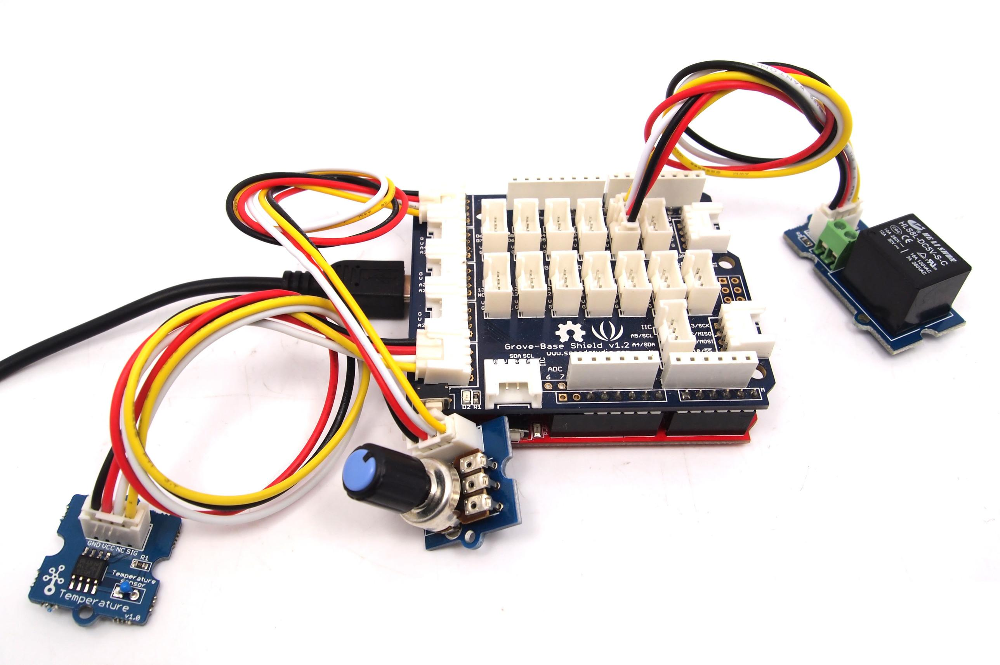

The final project in our series may seem complex, but is quite simple. We use the potentiometer to allow user input of a temperature value, and using the temperature sensor – if the ambient temperature rises above the value set via the potentiometer the relay is activated.

Now upload the following Arduino sketch:
// Project Eight - Thermostat
//
int a,c,d;
int z=3975;
int relaypin=2;
float b, q, resistance, temperature;
void setup()
{
pinMode(relaypin, OUTPUT);
}
void loop()
{
a=analogRead(4);
b=0.0488*a;
c=int(b);
q=analogRead(0);
resistance=(float)(1023-q)*10000/q;
temperature=1/(log(resistance/10000)/z+1/298.15)-273.15;
d=int(temperature);
if (d>=c)
{
digitalWrite(relaypin, HIGH);
delay(500);
}
if (d<c)
{
digitalWrite(relaypin, LOW);
delay(500);
}
}
Try turning the potentiometer to the right and left and see if the relay turns on or off.
Copyright (c) 2008-2016 Seeed Development Limited (www.seeedstudio.com / www.seeed.cc)